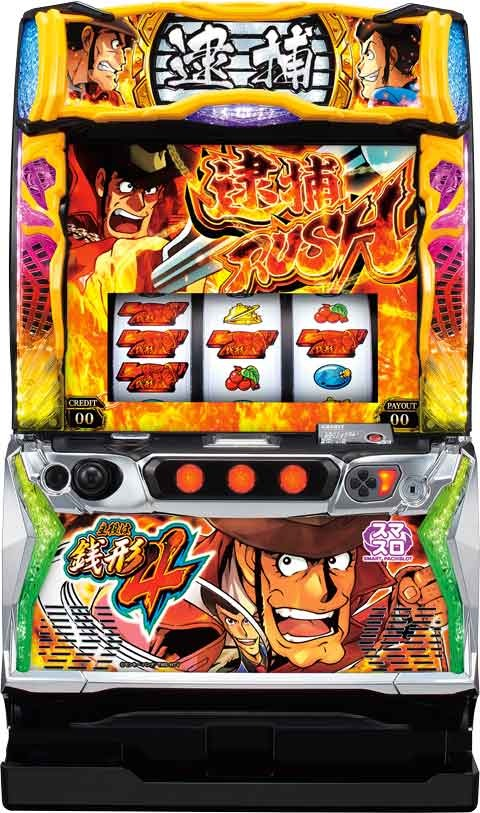

L主役は銭形

[天井情報］
1399ガッツ+α
リセット時は天井短縮
899ガッツ+α
[リセット関連]
ガックン 不か
据え置き、リセ判別
据え置きでもガッツがランダム加算されるため判別ほぼ不可
[有利区間について]
0から差枚2400枚でエンディング。エンディング後30G連からスタート。
0から差枚2000枚あたりでエクストラボーナス→エンディングに移行する。
狙い目
[天井狙い]
前回実G400以内
590ガッツ〜
前回実G500-700
530ガッツ〜
前回実G800以上
600ガッツ〜
0から差枚+1000枚以上の台←モード移行冷遇？
830ガッツ〜
[朝イチ]
280ガッツ〜
[ゾーン狙い]
天国狙い(〜199ガッツ)
120ガッツ〜
前回実G800以上ハマりの場合
70ガッツ〜
メニュー画面
右下に示唆キャラいたら50-100ガッツボーダー下げれる。
液晶下部の緑帯は天井狙いでほぼ恩恵なし。天国は少し優遇？
天国狙い時に20ガッツボーダー下げる。
30G連後は150ガッツのゾーンで当選。
超逮捕ラッシュ後は、次回天国確定、その次回も50％以上なので天国確認。
天国ループ中なら3回目まで天国確認。
やめ時
30連後は天国確定のため150のゾーン打切り。
超逮捕ラッシュ後は上記内容確認。
それ以外は1ゲーム回してやめ。
90ガッツ以内で当選が続いてる場合は、超天国の可能性あるため150のゾーン終わりまで？
その他
超逮捕ラッシュ後の天国期待度
{kind=link}
参考元
基本情報
- メーカー: オリンピア
- 機械割: 98.2% 〜 114.1%
- 導入開始日: 2023年05月08日（月）
- ゲーム性概要: HEIWAグループのスマスロ第2弾。通常時は規定ゲーム数（規定ガッツ）を契機にATを目指すゲーム性で、ガッツの獲得特化ゾーンも存在する。余剰したガッツはAT終了後に持ち越しされるところもポイントだ。AT「逮捕RUSH」は純増約2.7枚/Gのゲーム数上乗せタイプ。おもにCZ「デカチャンス」を契機に突入する上乗せ特化ゾーン「BIG GAME」と「30G連」を搭載している。「30G連」では金7揃いで強力な特化ゾーン「超逮捕RUSH」に突入する。


打ち方
打ち方・小役
打ち方（小役狙い）
「最初に狙う絵柄」 左リール上段付近にBARを狙う。

「中段にチェリー停止」
成立役…中段チェリー

「角チェリー停止時」
成立役…弱チェリー／強チェリー
中＆右リールはフリー打ちでOK。3連チェリーや右リール中段にボーナス絵柄停止で強チェリーとなる。弱チェリーの払い出しは3枚、強チェリーはリプレイなので、払い出し枚数での判別も可能だ。

「下段BAR停止時」
成立役…ハズレ／リプレイ／プラム／チャンスリプレイ

「ベル停止時」
成立役…ベル
中リールをフリー打ちし、右リールに赤7を目安にベルを狙う。

「レア役の停止形（左リール第1停止時の一例）」

「デカ目・中段チェリーの停止形」 通常時はいわゆるリーチ目扱い。AT中は出現確率が大幅にアップし、ゲーム数上乗せやCZ突入の契機となる。 ※デカ目の左上段ベルハズレは左枠内にBARを狙った時

変則押しはNG
通常時の押し順ナビ非発生時は、左リール第1停止での消化を推奨する。

解析情報通常時
小役関連
小役確率
| 役 | 確率 |
|---|---|
| リプレイ | 1/8.9 |
| 弱チェリー | 1/80.0 |
| ベル | 1/92.8 |
| チャンスリプレイ | 1/99.9 |
| 強チェリー | 1/256.0 |
| デカ目 | 1/8143.7 |
| 中段チェリー | 1/161319.4 |
※レア役の合算確率は1/26.9
AT中や30G連中の確定役確率はコチラ
内部状態関連
急行モード性能
| 項目 | 内容 |
|---|---|
| 移行契機 | 有利区間移行時、ゼニガダッシュ終了時 |
| 恩恵 | 滞在中のゼニガダッシュは2セット以上継続 |
| 備考 | ショート・ロングの2種類があり、 ロングにはループ性あり |
有利区間移行時とゼニガダッシュ終了時に抽選される状態で、ショートとロングの2種類が存在。 滞在中に当選したゼニガダッシュは急行ver.（必ず2セット以上継続） となる。ロングにはループ性があり、ゼニガダッシュ当選後も80%で継続するため強力だ。
ゼニガダッシュ高確性能
| 項目 | 内容 |
|---|---|
| 移行契機 | 有利区間移行時、AT終了後、 300or700ガッツ到達時、 弱チェリーとベル時の抽選 |
| 保証ゲーム数 | 15G |
| 恩恵 | 滞在中はゼニガダッシュの当選率がアップ |
| 終了抽選 | 保証ゲーム消化後に毎ゲーム抽選 |
おもに弱チェリー時に移行するゼニガダッシュの高確状態。 高確中はレア役時のゼニガダッシュ当選率がアップするだけでなく、リプレイやプラムでもゼニガダッシュが抽選 される。有利区間移行時やAT終了後も高確スタートのチャンスだ。
「ゼニガダッシュ当選後は別抽選」 ゼニガダッシュ当選後の前兆中は、内部状態不問の抽選値でゼニガダッシュのストックを抽選する（高確のゲーム数も消費しない）。
ゼニガダッシュ終了時の急行モード移行率
| 滞在モード | 通常へ | 急行ショートへ | 急行ロングへ |
|---|---|---|---|
| 通常 | 93.4% | 6.3% | 0.4% |
| 急行ショート | 98.4% | 1.6% | － |
| 急行ロング | 19.9% | － | 80.1% |
※有利区間移行時は通常滞在から抽選
急行モードへの移行率は低いが、ロングに当選すればゼニガダッシュ終了後も約80%でループする。
［有利区間移行時＆AT終了後］高確移行率
| 契機 | 移行率 |
|---|---|
| 有利区間移行時・AT終了後 | 50.0% |
［弱チェリー&ベル］高確移行率
| 役 | 移行率 |
|---|---|
| 弱チェリー | 35.2% |
| ベル | 0.8% |
［保証15G消化後］高確転落率
| 役 | 転落率 |
|---|---|
| 不問 | 30.5% |
モード
通常モード概要
有利区間移行時と30G連移行時に初期モードを抽選。AT当選後は前回のモードを参照して抽選される。 前回の規定ガッツが900以上（通常AorB）だった場合は、次回天国以上期待度がアップする。
モードごとの最大天井
| モード | 天井（補足要素） |
|---|---|
| 通常A | 1399ガッツ （AT当選時に執念ポイント100獲得） |
| 通常B | 1399ガッツ （AT当選時に執念ポイント獲得） |
| 通常C | 899ガッツ |
| 通常D | 699ガッツ |
| 通常E | 499ガッツ |
| 通常F | 299ガッツ |
| 天国A | 199ガッツ |
| 天国B | 99ガッツ |
| 超天国 | 99ガッツ（ループ性あり） |
モード平均の規定ガッツ分布
| ガッツ | 期待度 |
|---|---|
| 1～99 | ○ |
| 100～199 | ○ |
| 200～299 | ○ |
| 300～399 | △ |
| 400～499 | ○ |
| 500～599 | △ |
| 600～699 | ○ |
| 700～799 | △ |
| 800～899 | ○ |
| 900～999 | △ |
| 1000～1099 | ○ |
| 1100～1199 | ○ |
| 1200～1299 | ○ |
| 1300～1399 | ○ |
超逮捕ラッシュ後の天国モード移行率
| 設定 | AT1回目 | AT2回目 | AT3回目 |
|---|---|---|---|
| 1 | 100% | 約53% | 約43% |
| 2 | 100% | 約53% | 約43% |
| 3 | 100% | 約59% | 約49% |
| 4 | 100% | 約60% | 約54% |
| 5 | 100% | 約60% | 約56% |
| 6 | 100% | 約60% | 約56% |
超逮捕ラッシュ後は天国モード移行率が優遇されている。2回〜3回目のATも天国へ行きやすいところがポイントだ。
前兆
ゼニガタイム
規定ガッツ到達を示唆する前兆ゾーン。警戒レベルが上がるほど本前兆期待度が上がり、最終的に連続演出で当否を告知する。

「警戒レベル」


「連続演出」

ガッツ
ガッツ概要
通常時は画面左上のガッツが規定数に到達するとAT確定。毎ゲーム1ずつ加算されるほか、特化ゾーンのゼニガダッシュでも加算される。

「前兆示唆パターン」 カウンターが炎に包まれたり、色が変わるとゼニガタイム（前兆）移行のチャンス。

天井短縮抽選
30G連終了後は画面左上のガッツカウンターの分母が199に短縮 （天井が199ガッツに短縮）されるので、30G連終了後は次のATまで打つことをオススメしたい。

ガッツごとのゼニガタイム期待度
ガッツごとのゼニガタイム期待度（AT当選率）には一部設定差があり、 800〜899の当選率は高設定が大きく優遇 。 また、特定のゾーンでセニガタイムに突入したかどうかで規定ガッツを判別できるパターンもあるのでしっかりとチェックしておきたい。
ガッツごとのゼニガタイム突入時・AT期待度
| ガッツ | 設定1 | 設定2 | 設定3 |
|---|---|---|---|
| 200～299 | 約20％ | ||
| 300～399 | 70％以上 ＋ゼニガタイム突入で499以内の当選濃厚 | ||
| 400～499 | 約20％ | 約20％ | 約22％ |
| 500～599 | 50％以上 ＋ゼニガタイム突入で699以内の当選濃厚 | ||
| 600～699 | 約30％弱 | ||
| 700～799 | 50％以上 ＋ゼニガタイム突入で899以内の当選濃厚 | ||
| 800～899 | 約30％ | 約31％ | 約38％ |
| 900～999 | 約90％ ＋ゼニガタイム失敗で執念ポイントMAX | ||
| 1000～1099 | 約31％ | 約32％ | 約49％ |
| 1100～1199 | 31.6% | 32.2% | 41.7% |
| 1200～1299 | 50％以上 | ||
| 1300～1399 | 100％（最大天井） | ||
| ガッツ | 設定4 | 設定5 | 設定6 |
| 200～299 | 約20％ | ||
| 300～399 | 70％以上 ＋ゼニガタイム突入で499以内の当選濃厚 | ||
| 400～499 | 約24％ | 25％以上 | 25％以上 |
| 500～599 | 50％以上 ＋ゼニガタイム突入で699以内の当選濃厚 | ||
| 600～699 | 約30％弱 | ||
| 700～799 | 50％以上 ＋ゼニガタイム突入で899以内の当選濃厚 | ||
| 800～899 | 約48％ | 50％以上 | 50％以上 |
| 900～999 | 約90％ ＋ゼニガタイム失敗で執念ポイントMAX | ||
| 1000～1099 | 50％以上 | 50％以上 | 50％以上 |
| 1100～1199 | 48.7% | 50％以上 | 50％以上 |
| 1200～1299 | 50％以上 | ||
| 1300～1399 | 100％（最大天井） |
ガッツごとのゼニガタイム突入率
| ガッツ | 突入率 |
|---|---|
| 200～299 | 高 |
| 300～399 | 低 |
| 400～499 | 高 |
| 500～599 | 低 |
| 600～699 | 高 |
| 700～799 | 低 |
| 800～899 | 高 |
| 900～999 | 低 |
| 1000～1099 | 中 |
| 1100～1199 | 中 |
| 1200～1299 | 中 |
| 1300～1399 | 天井 |
ガッツ特化ゾーン／ゼニガダッシュ
ゼニガダッシュ概要
通常時のレア役で抽選されるガッツ獲得の特化ゾーンで、毎ゲームの成立役に応じてガッツを加算。 終了後はゼニガタイム（前兆）移行やガッツチャレンジでATの当否を告知する。

ゼニガダッシュ性能
| 項目 | 内容 |
|---|---|
| 突入契機 | レア役 |
| 継続ゲーム数 | 6G/セット |
| 消化中の抽選 | 毎ゲームの成立役に応じてガッツを加算 |
| 消化中の抽選 | 1Gあたり最低5ガッツ |
| 平均加算ガッツ | 90ガッツ |
実戦上、中段チェリー契機のゼニガダッシュは規定ガッツに到達するまで継続（無限）。 また、当選時の約1/256で無限に当選する。
「急行はチャンス」 銭形が自転車に乗っているのがデフォルト。電車に乗っている急行パターンは2セット以上継続するので、ガッツ大量加算に期待できる！


「帯出現で上位モードのチャンス」 ゼニガダッシュ消化中、リール下に帯が出現した場合は規定ガッツが近い可能性あり。帯色は緑＜赤＜虎柄＜虹の4種類で、モードや規定ガッツなどを示唆している。

［帯はメニュー画面にも表示］ 帯出現後は、メニュー画面にも同じ帯が表示されるので確認は簡単。帯とは別に、右側に出現するキャラでも規定ガッツなどを示唆している。

ガッツチャレンジ
ゼニガダッシュ終了時の一部で発生する、貯めたガッツを使ってATの当否を告知するジャッジ演出。ルパン逮捕成功でAT確定だ。通常のゼニガタイム（前兆ステージ）を経由してATを告知するパターンもある。

「余ったガッツはAT終了時に持ち越し」 規定ガッツを超えて獲得した分は、AT終了時のガッツチャレンジで使用されるのでムダ引きにはならない（完走後などを除く）。

「虎柄は激アツ！」 規定ガッツ到達確定!?

ゼニガダッシュ当選率
| 役 | 通常滞在時 | 高確滞在時 |
|---|---|---|
| リプレイ | － | 3.1% |
| プラム | － | 3.1% |
| 弱チェリー | 0.8% | 33.2% |
| ベル | 15.2% | 50.0% |
| チャンスリプレイ | 30.1% | 75.0% |
| 強チェリー | 60.2% | 100% |
ゼニガダッシュ平均当選確率
| 設定 | 確率 |
|---|---|
| 1 | 1/98.3 |
| 2 | 1/98.2 |
| 3 | 1/97.9 |
| 4 | 1/97.6 |
| 5 | 1/97.3 |
| 6 | 1/97.0 |
※内部状態を加味したトータル確率
初期セット数振り分け
| セット数 | 振り分け |
|---|---|
| 1セット | 96.1% |
| 2セット | 3.1% |
| 3セット | 0.8% |
［ゼニガダッシュ本前兆中］ストック当選率
| 役 | 当選率 |
|---|---|
| 弱チェリー | 3.1% |
| ベル | 3.1% |
| チャンスリプレイ | 20.3% |
| 強チェリー | 100% |
| デカ目 | 100% |
| 中段チェリー | 100% |
［ゼニガダッシュ中］ガッツ振り分け
| ガッツ | その他 | リプレイ | プラム | 弱チェリー |
|---|---|---|---|---|
| 5 | 98.8% | 89.5% | － | － |
| 10 | － | － | － | － |
| 20 | － | － | 84.9% | － |
| 30 | － | － | － | 74.2% |
| 50 | 0.8% | 10.1% | 10.0% | 10.6% |
| 100 | 0.4% | 0.4% | 4.6% | 10.1% |
| 300 | 0.01% | 0.003% | 0.4% | 4.9% |
| 500 | 0.01% | 0.003% | 0.04% | － |
| 1000 | 0.002% | 0.002% | 0.02% | 0.2% |
| ガッツ | ベル | チャンス リプレイ | 強チェリー | 確定役 |
| 5 | － | － | － | 調査中 |
| 10 | － | － | － | 調査中 |
| 20 | － | － | － | 調査中 |
| 30 | 52.0% | 33.4% | － | 調査中 |
| 50 | 31.2% | 33.4% | － | 調査中 |
| 100 | 15.0% | 32.4% | 75.4% | 調査中 |
| 300 | 1.3% | 0.4% | 21.1% | 調査中 |
| 500 | 0.4% | 0.3% | 0.4% | 調査中 |
| 1000 | 0.1% | 0.1% | 3.1% | 調査中 |
※確定役…デカ目・中段チェリー
毎ゲーム、最低5ガッツを獲得できる。
終了時の無限＆ループストック抽選
ゼニガダッシュ終了時は無限への昇格を抽選。無限の抽選に漏れた場合は約80%のループストックが抽選される。どちらも当選率0.4%と低いが、当選した時の恩恵は大きい。
終了時の無限移行＆ループストック当選率
| 抽選 | 当選率 |
|---|---|
| 無限移行 | 0.4% |
| ループストック（ループ率80.1%） | 0.4% |
※無限移行の抽選に漏れた場合にループストックを抽選
ループストック当選時は前兆を経て放出される。
執念ポイント
執念ポイント概要
執念ポイントが 100ptあるとAT当選時にBIGゲーム確定のCZをストック 。 100pt貯まった場合は次回の初期ポイントを0or70or90ptに抽選で決定（100pt未満は次回に引き継ぎ）。設定変更時は初期ポイントを49pt以下にするか50pt以上にするかを抽選して、50pt以上が選ばれた抽選で最大90ptまで獲得できる。
執念ポイント獲得契機
| 契機 | 備考 |
|---|---|
| 連続演出失敗時 | ゼニガダッシュ・AT対応の連続演出など |
| デカチャンス敗北時 | 1G目に告知 |
| AT終了時 | 1G目に告知 |
| AT当選時 | AT突入時に告知 |
| 通常A選択時 | AT突入時に告知＆100pt獲得 |
| 通常B選択時 | AT突入時に告知＆5pt以上獲得 |
執念ポイント獲得量示唆
| エフェクト | 獲得時 | 所持数示唆 |
|---|---|---|
| 小 | 1pt以上 | 70pt以上 |
| 中 | 11pt以上 | 90pt以上 |
| 大 | 31pt以上 | MAX |
［通常A・B滞在時］AT当選時の執念ポイント振り分け
| 執念ポイント | 通常A滞在時 | 通常B滞在時 |
|---|---|---|
| ＋5pt | － | 58.6% |
| ＋10pt | － | 25.0% |
| ＋15pt | － | 12.5% |
| ＋30pt | － | 3.1% |
| ＋50pt | － | 0.4% |
| ＋100pt | 100% | 0.4% |
［設定変更時］初期執念ポイント振り分け
| 初期執念ポイント | 振り分け |
|---|---|
| 49pt以下 | 39.8% |
| 50pt以上 | 60.2% |
［設定変更時］50pt以上選択時の振り分け
| 初期執念ポイント | 振り分け |
|---|---|
| 50pt | 41.6% |
| 55pt | 0.6% |
| 60pt | 7.8% |
| 65pt | 12.3% |
| 70pt | 16.2% |
| 75pt | 0.6% |
| 80pt | 16.2% |
| 85pt | 0.6% |
| 90pt | 3.9% |
有利区間関連
有利区間データ
| 項目 | 内容 |
|---|---|
| 有利区間ランプ | ナシ（見た目での判別不可） |
| 有利区間リセット契機 | 基本的に有利区間完走後 |
| 有利区間移行時の抽選 | 30G連へ |
有利区間は基本的に完走（エクストラボーナス）後に切れ、非有利区間→有利区間と移行したタイミングで30G連へ突入する仕組み。ただし、デカチャンスでゼニロボ起動に成功し、非完走でATが終了した場合は有利区間を切らずに30G連に突入する。
解析情報ボーナス時
AT中の確定役まとめ
状態別の確定役確率
30G連中を含め、AT中は状況によってデカ目、中段チェリーの確率が大きく変化する。
AT中の確定役確率
| 状態 | デカ目 | 中段チェリー |
|---|---|---|
| 30G連中 | 1/426.4 | 1/16384.0 |
| 逮捕ラッシュ中 | 1/329.2 | 1/16384.0 |
| デカ目高確中 | 1/27.9 | 1/16384.0 |
| CZ：ゼニロボ以外 | 1/22.4 | 1/16384.0 |
| CZ：ゼニロボ中 | 1/357.9 | 1/262144.0 |
| BIGゲーム中 | 1/40.0 | 1/16384.0 |
| 超逮捕RUSH中 | 1/27.9 | 1/16384.0 |
AT／逮捕ラッシュ
逮捕ラッシュ概要
ゲーム数管理型のAT。レア役やデカチャンス（CZ）クリアでゲーム数を上乗せしつつ、ロング継続を目指すゲーム性だ。小役とは別に消化ゲーム数によるCZ抽選も存在する。

逮捕ラッシュ性能
| 項目 | 内容 |
|---|---|
| 突入契機 | 規定ガッツ到達 |
| 継続ゲーム数 | 50G＋α |
| 1Gあたりの純増 | 約2.7枚 |
| 消化中の抽選 | 高確移行、ゲーム数上乗せ、CZなど |
「ゲーム数直乗せ」

成立役ごとの上乗せ性能
| 役 | 内容 |
|---|---|
| ベル | 上乗せ時は大量上乗せに期待 |
| 弱チェリー | 約20%で上乗せ |
| 強チェリー | 上乗せ確定 |
| デカ目 | 上乗せ濃厚かつ、CZ期待度約50% |
レア役・デカ目で上乗せを抽選。上乗せとCZのダブル当選もあり。
「アイコン上乗せ」


アイコンごとの上乗せ性能（一部）
| アイコン | 内容 |
|---|---|
| ピンク | ＋10G以上 |
| 黄 | ＋30G以上 |
| 黒 | 大量上乗せの可能性あり |
| 虎柄 | ＋100G以上 |
直乗せだけでなく、アイコン（後乗せ）獲得も抽選。アイコンはリール右側にストックされ、ATゲーム数消化後にまとめて上乗せを告知する。
［ゼニガチャージ］ AT中に発生する可能性あり。中or右リールを押せばゲーム数が上乗せされる（基本は10G）。

「デカ目高確」 チャンスリプレイの 約25% で突入するデカ目の高確率状態。5〜15G間、デカ目確率が 1/27.9 にアップする。

「捜査カウンター」

捜査カウンター（ゲーム数消化）でのCZ抽選
| 項目 | 内容 |
|---|---|
| 期待できるゲーム数 | 30G、70G、120G、180G、250G付近 |
| 滞在モード | 複数のモードで期待度の高いゲーム数や天井が変化 |
リール左にはATの消化ゲーム数が表示されていて、規定ゲーム数に到達するとCZに突入。CZが終了するとゲーム数が1からに戻る（CZの成否は不問）。
「リール下アイコン」 リールの下に表示されたアイコンでは、当該セットを含めて3セット分のCZの種類を示唆。 赤アイコンは成功すれば約50%でBIGゲーム に突入、 紫アイコンは不二子CZ or ゼニロボ以上のCZ突入確定 だ。

エクストラボーナス
一定以上の枚数を獲得すると突入する、いわゆるエンディング状態。完走まで継続し、終了後は30G連へ突入する。

ゲーム数上乗せ当選率
レア役によるゲーム数上乗せ当選率は比較的高めで、強チェリーと確定役は上乗せ確定。上乗せゲーム数は10〜300Gで、ベルで上乗せした場合やデカ目時は＋30G以上、中段チェリーは＋100G以上が確定する。
AT中の上乗せ当選率
| 役 | 当選率 |
|---|---|
| 弱チェリー | 20.3% |
| ベル | 9.4% |
| チャンスリプレイ | 12.5% |
| 強チェリー | 100% |
| デカ目 | 100% |
| 中段チェリー | 100% |
上乗せ当選時・上乗せゲーム数振り分け
| 上乗せ | 弱チェリー | ベル | チャンスリプレイ |
|---|---|---|---|
| ＋10G | 92.2% | － | 92.2% |
| ＋30G | 7.0% | 52.4% | 7.0% |
| ＋50G | 0.4% | 33.6% | 0.4% |
| ＋100G | 0.4% | 12.6% | 0.4% |
| ＋200G | 0.002% | 0.7% | 0.002% |
| ＋300G | 0.002% | 0.7% | 0.002% |
| 上乗せ | 強チェリー | デカ目 | 中段チェリー |
| ＋10G | 50.4% | － | － |
| ＋30G | 34.7% | 69.9% | － |
| ＋50G | 12.6% | 15.3% | － |
| ＋100G | 1.6% | 12.6% | 75.0% |
| ＋200G | 0.4% | 1.5% | 12.5% |
| ＋300G | 0.4% | 0.8% | 12.5% |
状態別のデカ目＆中段チェリー確率
| 滞在状態 | デカ目 | 中段チェリー |
|---|---|---|
| 通常 | 1/329.2 | 1/16384.0 |
| デカ目高確 | 1/27.9 | 1/16384.0 |
デカ目高確移行率
| 役 | 移行率 |
|---|---|
| ベル | 5.0% |
| チャンスリプレイ | 25.0% |
デカ目高確移行時のゲーム数振り分け
| ゲーム数 | 振り分け |
|---|---|
| 5G | 98.0% |
| 10G | 1.6% |
| 15G | 0.4% |
デカチャンス抽選モード
AT中は4種類のモードで CZ（デカチャンス）が当選する天井ゲーム数とAT終了時（終了待機時）でのCZ当選率が変化 。各モードにゲーム数テーブルがあるため、最大天井到達前に当選することもある。初回モードはAT初回に移行しやすく、天国モードは成功確定のCZに突入する。
デカチャンス抽選モードごとの天井
| モード | 備考 | 最大天井 |
|---|---|---|
| 初回 | ● 早いゲーム数で当選しやすい ● 次回チャンスモードへ行きやすい ● AT終了時にCZに当選しやすい | 180G |
| 通常 | ● 天井での当選比率が高い | 250G |
| チャンス | ● 比較的早めに当選しやすい ● AT終了時に必ずCZに当選 | 180G |
| 天国 | ● 成功確定のCZへ | 1G |
契機別のCZ当選率
契機を問わず、CZの種類（キャラ）は3回先まで決まっていて、CZ当選時は順番に放出。ただし、天国モード時のみ回数不問で成功確定のCZになる。
［モード別・ゲーム数契機］CZ当選率
| ゲーム数 | 初回 | 通常 | チャンス | 天国 |
|---|---|---|---|---|
| 1G | － | － | － | 100% |
| 30G | 32.1% | 13.0% | 25.0% | － |
| 70G | 25.0% | 12.7% | 3.1% | － |
| 120G | 7.8% | 6.3% | 25.0% | － |
| 180G | 35.1% | 28.0% | 46.9% | － |
| 250G | － | 40.0% | － | － |
［レア役契機］CZ当選率
| 役 | 当選率 |
|---|---|
| 弱チェリー | 0.8% |
| 強チェリー | 25.0% |
| デカ目 | 50.0% |
| 中段チェリー | 100% |
中段チェリーはゲーム数上乗せとのダブル当選が確定する。
終了待機中のCZ抽選
レア役を引けばCZ（デカチャンス）当選のチャンス。レア役を引けなかった場合は滞在していたデカチャンス抽選モードを参照してCZが抽選される。両方をトータルしたCZの平均当選率は 13.1% だ。

［レア役］終了待機中のCZ当選率
| 役 | 当選率 |
|---|---|
| 弱チェリー | 25.0% |
| ベル | 25.0% |
| チャンスリプレイ | 25.0% |
| 強チェリー | 100% |
［デカチャンス抽選モード依存］終了待機中のCZ当選率
| モード | 当選率 |
|---|---|
| 初回 | 23.3% |
| 通常 | 0.4% |
| チャンス | 100% |
ゼニガチャージ抽選
ATが300G以上続いた時に発生する可能性があるゲーム数上乗せ要素で、ナビに従って？マークからリールを止めれば10Gが上乗せされる。

CZゲーム数当選分布
| ゲーム数 | 分布 |
|---|---|
| 1G | 3.0% |
| 30G | 20.0% |
| 70G | 16.5% |
| 120G | 7.1% |
| 180G | 30.3% |
| 250G | 23.0% |
※デカチャンス抽選モード移行を加味した分布
デカチャンス抽選モード移行を加味したCZ（デカチャンス）のゲーム数当選分布。天国移行率は3.0%だ。
［AT準備中］CZ当選率
| 役 | 当選率 |
|---|---|
| 弱チェリー | 0.8% |
| ベル | 0.8% |
| チャンスリプレイ | 0.8% |
| 強チェリー | 20.3% |
AT中の規定ゲーム振り分け（到達でデカチャンス）
| 設定 | 1Ｇ | 30Ｇ | 70Ｇ |
|---|---|---|---|
| 1 | 3.0% | 19.9% | 16.5% |
| 2 | 3.1% | 19.8% | 16.5% |
| 3 | 3.3% | 19.6% | 16.4% |
| 4 | 3.7% | 19.2% | 16.1% |
| 5 | 4.2% | 18.6% | 15.7% |
| 6 | 4.7% | 18.1% | 15.4% |
| 設定 | 120G | 180G | 250G |
| 1 | 7.1% | 30.3% | 23.1% |
| 2 | 7.1% | 30.2% | 23.3% |
| 3 | 7.1% | 30.1% | 23.5% |
| 4 | 7.1% | 29.8% | 24.0% |
| 5 | 7.0% | 29.4% | 25.0% |
| 6 | 7.0% | 29.1% | 25.8% |
CZ／デカチャンス
デカチャンス概要
成功すれば上乗せ以上が確定するチャンスゾーン。対応役や成功報酬の異なる7パターンが存在する。

デカチャンス性能
| 項目 | 内容 |
|---|---|
| 突入契機 | レア役、ゲーム数消化 |
| 突入確率 | 約1/118 |
| 継続ゲーム数 | 8G |
| 成功期待度 | 約56% |
| 成功時の報酬 | ゲーム数上乗せ、BIGゲーム、30G連など |
| 成功時の平均上乗せ | 30～300G |
| 成功時のBIGゲーム期待度 | 36.0% |
| 特徴 | デカ目確率が1/22.4にアップ（※） |
| 特徴 | キャラごとの対応役orデカ目成立で成功 |
※ゼニロボ起動チャンス以外
CZキャラ別・対応役と成功時の恩恵
| キャラ | 対応役 | 成功時の恩恵 |
|---|---|---|
| ルパン | チェリー | 上乗せ以上 |
| 次元 | チャンスリプレイ | 上乗せ以上 |
| 五ェ門 | ベル | 上乗せ以上 |
| 不二子 | 全レア役 | BIGゲーム |
| ゼニロボ | 全レア役でチャンス | 30G連の権利獲得 |
| エピローグ | 成功確定 | BIGゲーム |
| ルパン一味 | 成功確定 | ロング継続に期待できるBIGゲーム |
※デカ目は全キャラ共通で成功確定
対戦相手ごとの対応役もしくは、デカ目、中段チェリーが成立すれば成功確定（中段チェリーはBIGゲーム確定）。最終ゲームのレア役はCZ共通で成功が確定する。
ゼニロボには対応役がない（デカ目は成功確定）代わりに、プラムでも成功の可能性がある。


「赤7チャレンジ」 上乗せ獲得後、赤7が完成すればBIGゲーム突入。BIGゲーム非当選時はATへ復帰する。


CZのキャラ別選択割合＆成功期待度（設定1）
| キャラ | 選択割合 | 成功期待度 |
|---|---|---|
| ルパン | 30.0% | 57.2% |
| 次元 | 29.7% | 53.7% |
| 五ェ門 | 29.7% | 55.5% |
| 不二子 | 4.3% | 67.2% |
| ゼニロボ | 5.9% | 52.6% |
| ルパン一味（宇宙） | 0.5% | 100% |
※ルパン、次元、五ェ門は成功でBIGゲームが確定するパターンあり
ルパンは強チェリーを引くとBIGゲームが確定する。
デカチャンスのキャラ選択割合
| 設定 | ルパン | 次元 | 五ェ門 |
|---|---|---|---|
| 1 | 30.0% | 29.7% | 29.7% |
| 2 | 30.0% | 29.6% | 29.7% |
| 3 | 29.9% | 29.7% | 29.7% |
| 4 | 29.9% | 29.6% | 29.6% |
| 5 | 29.8% | 29.5% | 29.5% |
| 6 | 29.7% | 29.5% | 29.5% |
| 設定 | 不二子 | 宇宙 | ゼニロボ |
| 1 | 4.3% | 0.5% | 5.9% |
| 2 | 4.4% | 0.5% | 5.9% |
| 3 | 4.4% | 0.5% | 5.9% |
| 4 | 4.5% | 0.5% | 5.9% |
| 5 | 4.6% | 0.5% | 6.0% |
| 6 | 4.8% | 0.5% | 6.0% |
種類（キャラ）別の成功抽選
CZ中はCZの種類（キャラ）に応じて、成立役を参照して成功（逮捕）を抽選。 成功した時点でゲーム数上乗せorBIGゲーム移行が確定 する。上乗せが当選している状態では上乗せと同じ抽選値でBIGゲーム当選を抽選。BIGゲームが確定している状態では、BIGゲームの継続ストックが抽選される。 ゲーム数上乗せは当選契機役不問で、＋30〜300Gから抽選される。
キャラ別のCZ成功率（上乗せ以上）& 継続確定後のBIGゲーム当選率
| 役 | ルパン | 次元 | 五ェ門 |
|---|---|---|---|
| プラム | － | － | － |
| 弱チェリー | 100% | 20.3% | 25.0% |
| ベル | 30.1% | 20.3% | 100% |
| チャンスリプレイ | 30.1% | 100% | 25.0% |
| 強チェリー | 100% | 100% | 100% |
| デカ目 | 100% | 100% | 100% |
| 役 | 不二子 | ゼニロボ | ルパン一味 |
| プラム | － | 6.3% | 役不問で 成功確定 |
| 弱チェリー | 100% | 33.2% | 役不問で 成功確定 |
| ベル | 100% | 33.2% | 役不問で 成功確定 |
| チャンスリプレイ | 100% | 33.2% | 役不問で 成功確定 |
| 強チェリー | 100% | 100% | 役不問で 成功確定 |
| デカ目 | 100% | 100% | 役不問で 成功確定 |
最終ゲームの勝利書き換え抽選当選率
| CZ | レア役以外 | レア役 |
|---|---|---|
| ルパン | 16.2% | 100% |
| 次元 | 12.0% | 100% |
| 五ェ門 | 14.0% | 100% |
| 不二子 | 30.4% | 100% |
| ゼニロボ | 10.4% | 100% |
BIGゲーム継続ストック当選率
| 役 | ルパン | 次元 | 五ェ門 |
|---|---|---|---|
| その他 | － | － | － |
プラム
| 弱チェリー | 100% | 12.5% | 12.5% |
|---|---|---|---|
| ベル | 12.5% | 12.5% | 100% |
| チャンスリプレイ | 12.5% | 100% | 12.5% |
| 強チェリー | 100% | 100% | 100% |
| デカ目 | 100% | 100% | 100% |
| 役 | 不二子 | ゼニロボ | ルパン一味 |
| その他 | － | － | 6.3% |
| プラム | － | － | 12.5% |
| 弱チェリー | 100% | 12.5% | 100% |
| ベル | 100% | 12.5% | 100% |
| チャンスリプレイ | 100% | 12.5% | 100% |
| 強チェリー | 100% | 100% | 100% |
| デカ目 | 100% | 100% | 100% |
※不二子・ルパン一味は成功＝BIGゲームなので継続ストックを抽選
［CZ共通］上乗せ告知ゲームのBIGゲーム当選率
| 役 | 当選率 |
|---|---|
| その他 | 0.4% |
| 弱チェリー | 25.0% |
| ベル | 25.0% |
| チャンスリプレイ | 25.0% |
| 強チェリー | 100% |
| デカ目 | 100% |
※不二子・ゼニロボ・ルパン一味は上乗せなし＝この抽選自体がない
特化ゾーン／BIGゲーム
BIGゲーム概要
1セット10Gの自力継続型ATゲーム数上乗せ特化ゾーンで、アイコンを獲得（ATゲーム数上乗せ）できれば次セットへの継続が確定。10G以内にアイコンを獲得できないと、3G連チャレンジへ突入する。

BIGゲーム性能
| 項目 | 内容 |
|---|---|
| 突入契機 | CZ成功後の一部（平均期待度36%） |
| 継続ゲーム数 | 自力継続パート10G＋3G連チャレンジ/セット |
| 消化中の抽選 | ATゲーム数上乗せ（上乗せ獲得でセット継続） |
| 平均上乗せ | 100G以上 |
「最初の10Gは自力継続パート」 レア役などで逮捕アイコン（上乗せ）を獲得できれば、次セットへ継続確定。

「3G連チャレンジ」 成功すればアイコンを獲得し、次セットへ継続。最初の10Gでアイコンを獲得した場合、3G連チャレンジには突入せず、直接次のセットが始まる。

「上乗せはラストでまとめて告知」 BIGゲーム中に獲得したアイコンは、終了時にまとめて開放される。

上乗せ（継続）抽選
「継続抽選とストック使用の流れ」 継続ストックを持っていた場合でもBIGゲーム中（10G以内）にレア役で自力で上乗せさせればストックを消費せずに継続。3G連チャレンジ中も同様の抽選値で上乗せを抽選するが、継続ストックは3G連に移行した時点で消費される。
「上乗せゲーム数の抽選」 継続時の上乗せゲーム数は上乗せ契機役に応じて抽選。継続ストック使用時は最終ゲームの成立役が参照される。上乗せ告知ゲームは同じ数値で上乗せを抽選するので、レア役のヒキ損はない。10セット目継続時は契機役不問で100G以上を上乗せする。
BIGゲーム＆3G連中のゲーム数上乗せ当選率
| 役 | 当選率 |
|---|---|
| 弱チェリー | 30.1% |
| ベル | 12.5% |
| チャンスリプレイ | 30.1% |
| 強チェリー | 100% |
| デカ目 | 100% |
| 中段チェリー | 100% |
上乗せ（継続）当選時・上乗せゲーム数振り分け
| 上乗せ | その他 | リプレイ | プラム |
|---|---|---|---|
| ＋20G | 91.8% | 91.8% | 91.8% |
| ＋30G | 6.2% | 6.2% | 6.2% |
| ＋50G | 1.6% | 1.6% | 1.6% |
| ＋100G | 0.4% | 0.4% | 0.4% |
| ＋200G | 0.002% | 0.002% | 0.002% |
| ＋300G | 0.002% | 0.002% | 0.002% |
| 上乗せ | 弱チェリー | ベル | チャンスリプレイ |
| ＋20G | － | － | － |
| ＋30G | 96.5% | 51.5% | 96.5% |
| ＋50G | 3.1% | 45.4% | 3.1% |
| ＋100G | 0.4% | 2.8% | 0.4% |
| ＋200G | 0.002% | 0.2% | 0.002% |
| ＋300G | 0.002% | 0.2% | 0.002% |
| 上乗せ | 強チェリー | デカ目 | 中段チェリー |
| ＋20G | － | － | － |
| ＋30G | 79.6% | 74.3% | － |
| ＋50G | 13.0% | 21.8% | － |
| ＋100G | 6.1% | 3.1% | 75.0% |
| ＋200G | 0.9% | 0.4% | 12.5% |
| ＋300G | 0.4% | 0.4% | 12.5% |
30G連
30G連概要
超逮捕ラッシュをかけた30Gのチャンスゾーン。金7が揃えば超逮捕ラッシュ突入確定だ。

30G連性能
| 項目 | 内容 |
|---|---|
| 突入契機 | CZでゼニロボ成功／エクストラボーナス後 |
| 継続ゲーム数 | 最大30G |
| 消化中の抽選 | 金7揃いで成功／レア役は無限への昇格抽選 |
| 成功期待度 | 50%以上 |
| 金7揃い確率 | 1/64.0 |
| 成功時の期待枚数 | 2000枚以上 |
ゼニロボの起動に成功した場合も、AT終了後に30G連へ突入する。
「狙えカットイン」 カットイン発生時に金7が揃えば成功確定。色は青＜緑＜赤の順にアツく、タイプライター発生で金7揃い濃厚だ。

「レア役もチャンス」 レア役成立時は無限30G連突入を抽選している。

「ラストチャンス」 最終ゲームはボタン連打でメーターがMAXになれば、超逮捕ラッシュ確定！

30G連トータル突入確率
| 設定 | 確率 |
|---|---|
| 1 | 1/6410.8 |
| 2 | 1/6400.2 |
| 3 | 1/6104.8 |
| 4 | 1/5853.1 |
| 5 | 1/5613.6 |
| 6 | 1/5476.0 |
成功時の告知ルート比率
| 成功告知パターン | 比率 |
|---|---|
| 金7揃い | 77.5% |
| 最終ゲームのボタン連打 | 22.5% |
※金7揃い確率は1/64.0
トータル約50%で成功する場合の比率は上記の通り。基本的には道中での金7揃いによる成功がメインだが、最終ゲームで当選するパターンもそれなりに高い。
成功（超逮捕ラッシュ）抽選
30G連成功契機は金7揃い（1/64.0）がメインだが、レア役でも無限移行を抽選。当選した後はレア役でCZ（デカチャンス）を抽選する。
30G連の契機別・超逮捕ラッシュ（無限）当選率
| 役 | 当選率 |
|---|---|
| 弱チェリー | 3.5% |
| ベル | 3.5% |
| チャンスリプレイ | 3.5% |
| 強チェリー | 40.0% |
| デカ目 | 100% |
| 中段チェリー | 100% |
超逮捕ラッシュ確定後のCZ当選率
| 役 | 当選率 |
|---|---|
| 弱チェリー | 0.8% |
| ベル | 0.8% |
| チャンスリプレイ | 0.8% |
| 強チェリー | 20.3% |
| デカ目 | 100% |
| 中段チェリー | 100% |
※CZの種類（キャラ）の振り分けは通常のAT中と同じ
上位AT／超逮捕ラッシュ
超逮捕ラッシュ概要
30G連成功で突入する最強特化ゾーン。毎ゲーム、超高確率でゲーム数上乗せが発生するほか、CZにも高確率で突入する。

超逮捕ラッシュ性能
| 項目 | 内容 |
|---|---|
| 突入契機 | 30G連成功後 |
| 継続ゲーム数 | 30G |
| 1Gあたりの純増 | 約2.7枚 |
| 滞在中の抽選状態 | 上乗せ超高確／デカ目高確率／CZ高確 |
| 期待枚数 | 2000枚以上 |
当選時は天国モードからスタートするため、開始1G目に成功確定のCZに当選する。
「ATゲーム数上乗せ」 通常の逮捕ラッシュと同様に、直乗せとアイコン獲得の2パターンで上乗せを獲得。アイコン分の上乗せは超逮捕ラッシュ終了時に告知される。レア役やデカ目だけでなく、プラムでも上乗せのチャンス！


「超逮捕ラッシュ中のCZ」 超逮捕ラッシュ中もCZを抽選していて、当選するたびにCZへ移行。CZを消化している間は、超逮捕ラッシュのゲーム数減算がストップする。

超逮捕ラッシュ中のCZ当選確率
| 契機 | 確率 |
|---|---|
| レア役契機 | 1/30.1 |
| ゲーム数消化契機 | 1/29.3 |
| 合算 | 1/14.9 |
超逮捕ラッシュは天国モードからスタートするため、開始1G目に成功確定のCZに当選する。
ゲーム数上乗せ＆CZ抽選
開始後10G間は30G連での超逮捕ラッシュ確定後と同じ数値でCZ（デカチャンス）を抽選。メインパートではプラムでゲーム数上乗せを、レア役でCZを抽選する。
［オープニング10G間］CZ当選率
※CZの種類（キャラ）の振り分けは通常のAT中と同じ
［メインパート］プラム時のゲーム数上乗せ当選率
| 上乗せ | 当選率 |
|---|---|
| ＋10G | 89.5% |
| ＋30G | 9.3% |
| ＋50G | 0.8% |
| ＋100G | 0.4% |
| ＋200G | 0.002% |
| ＋300G | 0.002% |
※プラム以外のゲーム数上乗せ抽選値は通常のATと同じ
プラム以外のゲーム数上乗せ抽選はコチラ
［メインパート］CZ当選率（設定1）
| 役 | 当選率 |
|---|---|
| 弱チェリー | 10.2% |
| ベル | 10.2% |
| チャンスリプレイ | 10.2% |
| 強チェリー | 25.0% |
| デカ目 | 50.0% |
| 中段チェリー | 100% |
※CZの種類（キャラ）の振り分けは通常のAT中と同じ
演出情報
通常時
メニュー画面のモード示唆
「メニュー画面の帯とミニキャラ」 ゼニガダッシュ中のリール下に帯が出現すれば上位モードのチャンス。帯はメニュー画面でも確認可能だ。帯色は緑＜赤＜虎柄＜虹の4種類が存在する。 200ガッツ到達時、メニュー画面にミニキャラのアミが出現すれば上位モード滞在の期待度がアップする。

200ガッツ到達時のちびアミ出現率
| モード | 出現率 |
|---|---|
| 通常A | 10.0% |
| 通常B | 4.0% |
| 通常C | 10.0% |
| 通常D | 10.0% |
| 通常E | 12.0% |
| 通常F | 16.0% |
ゼニガダッシュ対応の連続演出期待度
| 連続演出 | 2G継続時 | 3G継続時 |
|---|---|---|
| 駄菓子 | 23.1% | 84.7% |
| バーゲン | 30.5% | 89.0% |
| 木彫り | 56.8% | 96.1% |
| ガチャ | 86.7% | 99.3% |
| カップメン | 100% | 100% |
［カップメン］

予告状の内容別期待度
| 内容 | 期待度 |
|---|---|
| ゼニガタイムは頂くぜ！ | 100% |
| ゼニガタイムＳＰは頂くぜ！ | 100% |
| チャンスアップは頂くぜ！ | 約99% |
| お楽しみはこれからだぜ！ | 約86% |
| 赤タイトルは頂くぜ！ | 約97% |
| 虎タイトルは頂くぜ！ | 100% |
| 根性ＰＵＳＨは頂くぜ！ | 100% |
| ゼニガダッシュは頂くぜ！ | ZD＋規定ガッツ到達のチャンス |
| 熱い時間の始まりだぜ！ | 100% |
※ZD…ゼニガダッシュ
前兆
ゼニガタイム中の連続演出期待度（AT対応）
| 連続演出 | ゼニガタイム中 | ゼニガタイムZ中 |
|---|---|---|
| アスレチック | 13.5% | 92.5% |
| カーチェイス | 16.2% | 95.3% |
| お化け屋敷 | 38.4% | 97.1% |
| ヒーローショー | 64.1% | 97.1% |
| 銭形執念の追跡 | 82.2% | 99.2% |
赤タイトルなら期待度大幅アップ！

ゼニガタイム突入前の高期待度パターン
| パターン | 期待度 |
|---|---|
| 不二子の「チャンスよ」 | 約68～80% |
| 不二子誘惑 | 約90% |
| アミ演出 | 100% |
ゼニガタイム中の高期待度パターン
| パターン | 期待度 |
|---|---|
| 予告状刺さる | 約90% |
| 報告演出のチャンスアップ→警戒アップ | 約88% |
| 不二子→警戒アップ | 約96% |
| ルパン一味潜伏発展 | 約86% |
| 不二子の「また会ったわね」 | 約60% |
| カブキ | 約96% |
| 不二子誘惑 | 100% |
| 殉職発展 | 100% |
［不二子］

［ルパン一味潜伏発展］

ゼニガタイムの警戒レベル別期待度

警戒レベル別期待度
| 警戒レベル | 期待度 |
|---|---|
| Lv.1 | 100% |
| Lv.2 | 11.5% |
| Lv.3 | 29.3% |
| Lv.4 | 83.5% |
| Lv.5 | 100% |
※各レベルで連続演出（ジャッジ）へ発展した場合の期待度
ガッツ特化ゾーン／ゼニガダッシュ
背景別の加算ダッシュ
| 背景 | 平均獲得ガッツ |
|---|---|
| ひまわり畑 | 30ガッツ （プラム以外なら50ガッツ以上） |
| 下町屋根 | 50ガッツ （弱チェリー以外なら100ガッツ以上） |
| サンセットビーチ | 55ガッツ （ベル以外なら100ガッツ以上） |
| 雪山 | 150ガッツ （レア役以外なら300ガッツ以上） |
| 火山 | 300ガッツ |
| 海中 | 400ガッツ |
［ひまわり畑］

［下町屋根］

［サンセットビーチ］

［雪山］

AT／逮捕ラッシュ
ステージ解説
「基本ステージ」

「屋上ステージ」 デカチャンス（CZ）期待度の高いステージ。

「ICPO捜査室ステージ」 CZ確定かつ、CZ成功時の報酬が優遇されたステージ。

モード示唆
セット開始画面でデカチャンス抽選モードを示唆する。


セット開始画面別の示唆
| 画面 | 示唆 |
|---|---|
| オレンジ背景 ＋キャラ単体（8種類） | デフォルト |
| オレンジ背景 ＋銭形＆ルパン（2種類） | デカチャンスのチャンス |
| 紫背景＋銭形＆八咫烏 | デカチャンス当選 |
| 紫背景＋ルパン一味 | デカチャンス当選 |
| 紫背景＋不二子 | 次回不二子デカチャンス示唆 |
| 紫背景＋ゼニロボ | 次回ゼニロボデカチャンス示唆 |
| 銭形捜査中 （パリ・水族館・キャンプ・ピラミッド） | デカチャンスのチャンス |
| 全員集合 | 捜査10日目のデフォルト |
| 自転車銭形 | 捜査20日目のデフォルト |
| ジャグジー不二子 | 不二子デカチャンス当選 |
| ゼニロボをつかめ | ゼニロボデカチャンス当選 |
| アミ・エナン | 天国モード確定 |
| 乗馬不二子 | 天国モード確定 ＋不二子デカチャンス当選 |
| オリンピアコレクション | 天国モード確定 ＋ゼニロボデカチャンス当選 |
| 初代主役は銭形下パネル | 天国モード確定 ＋ルパン一味デカチャンス当選 |
※デカチャンスはすべて当該セットの残りゲーム数以内のモノ
［オレンジ背景＋単体］

［紫背景＋不二子］

［銭形捜索中］ ※画像はキャンプ

［ジャグジー不二子］

［ゼニロボをつかめ］

［アミ・エナン］

［乗馬不二子］

［オリンピアコレクション］

［初代主役は銭形下パネル］

前兆移行時のステージ別期待度
| 前兆時の移行先 | 期待度 |
|---|---|
| 移行なし | 7.2% |
| ゼニガタイム | 33.4% |
| 屋上 | 51.2% |
| ICPO | 100% |
CZ／デカチャンス
チャンスステージ
CZのルパン、次元、五ェ門には2種類のステージがあり、チャンスステージ中は成功すればBIGゲームが確定する。
ルパン・次元・五ェ門のステージ一覧
| キャラ | デフォルトステージ | チャンスステージ |
|---|---|---|
| ルパン | ピラミッド | 繁華街 |
| 次元 | アルプス | ピラミッド |
| 五ェ門 | 繁華街 | アルプス |
デカチャンス中のステージ振り分け
| デカチャンス | デフォルトステージ | チャンスステージ |
|---|---|---|
| 次元 | 92.83% | 7.17% |
| 五ェ門 | 92.77% | 7.23% |
| ルパン | 92.84% | 7.16% |
［チャンスステージ（ルパン）］ タイトルにも「逮捕できればBIG GAME」と表示されるのでわかりやすい！